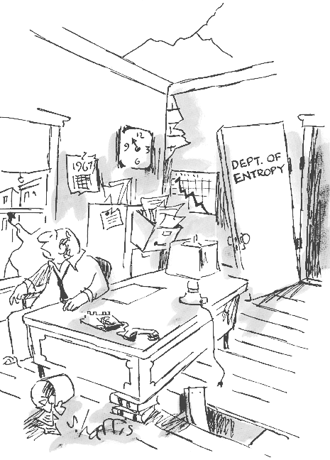

"We are at the very beginning of time for the
human race. It is not unreasonable that we grapple with problems. But
there are tens of thousands of years in the future. Our responsibility
is to do what we can, learn what we can, improve the solutions, and
pass them on."
Richard Feynman
As we have seen the first law of thermodynamics is no more than a
statement of conservation of energy. However, there are many
processes which would conserve energy but never take place.
When hot and cold objects are placed in thermal contact the hot
object never gets hotter as the cold object gets colder.
Water does not spontaneously boil by extracting heat from the
environment.
All the molecules in a room are never found only in one half of
the room.
The second law disallows certain processes, including those
listed above, allowed by the first law.
There are a number of different
statements of the second
law. The Kelvin and Clausius statements involve practical aspects
of heat engines and refrigerators. The more general statement
involves the concept of entropy and the definition of reversible and
irreversible processes and is closely related to ideas of chaos and
disorder and the "arrow of time".

I believe in the
heat death of the Universe.
I'm a Kelvinist.